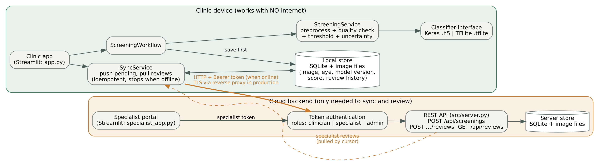
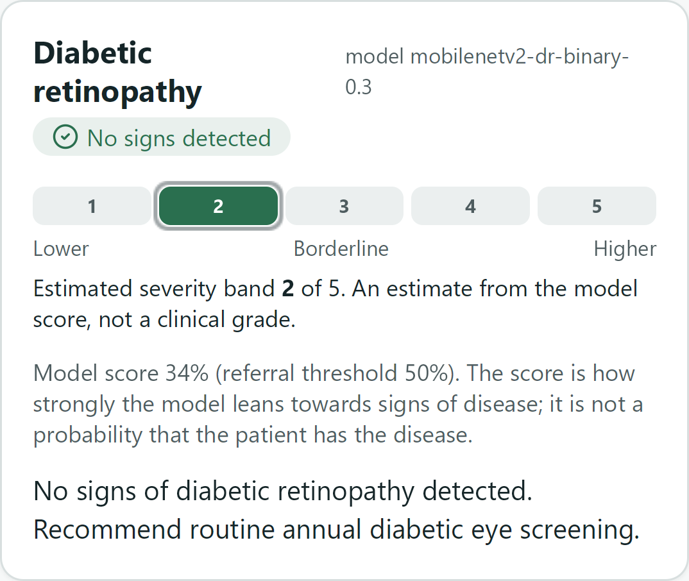
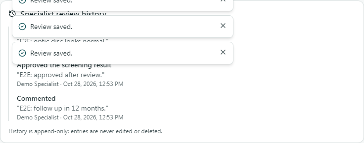

The approved proposal planned an offline-first Android app that screens fundus photos for diabetic retinopathy (DR), glaucoma and cataract on the
device, refers uncertain or high-risk cases to a specialist dashboard, and syncs when connectivity returns. Following supervisor feedback (a feasible
prototype with one demonstrable workflow; reconcile offline use with sync and authentication; separate research evaluation from development), effort went
first into one complete, tested workflow; the model registry then made adding the glaucoma and cataract models a data task with no code change.
Main deviation: the proposal specified React Native with on-device TensorFlow Lite; the delivered app is an installable PWA with server-side inference (one code base for Android and
iPhone, models verified and replaced on the server); offline therefore covers capture and queueing, and scoring happens after sync. The full table with
evidence paths is in docs/scope_table.md.
| Planned feature (proposal) | Status | Evidence |
|---|---|---|
| DR classifier (MobileNetV2, TFLite) | Completed | v2.0 fine-tuned, served; recomputation and parity tests |
| Glaucoma classifier (ODIR-5K) | Completed, below target | sensitivity 0.762, specificity 0.721, precision 0.103 (1,040 eyes, 42 positive) |
| Cataract classifier (ODIR-5K) | Completed, limited evidence | 0.978 / 0.962 / precision 0.542; only 46 positive test eyes |
| Five-band cataract grading | Not implemented | ODIR-5K has no severity labels; binary result only |
| Risk / severity output | Completed (changed) | DR: five-band estimated band from the binary score; others binary |
| Sensitivity ≥ 85%, specificity ≥ 80% on a held-out test set | Partial | DR sensitivity 0.851 met, specificity 0.748 not met; glaucoma not met; cataract met |
| On-device TFLite inference | Changed | server-side LiteRT; offline = capture and queue, scored after sync |
| Android app (React Native) | Changed | installable PWA for Android and iPhone |
| Offline storage and two-way sync | Completed | IndexedDB queue, idempotent push, decision pull, interruption tests |
| Register patient, capture image, run screening, view result | Completed (changed) | patient stored as a code and year of birth (no name); E2E journeys on four browser profiles |
| Flag uncertain / high-risk cases for referral | Completed | uncertain cases flagged and queued automatically (configurable); clear positives sent by the health worker; decision pulled back |
| Specialist review: approve or override | Completed | asynchronous queue with the question, review targets; override, retake, comment |
| Admin: user accounts and analytics | Completed | approve / reject sign-up requests, roles, aggregate analytics |
| FastAPI + PostgreSQL backend | Completed | SQLite locally; backend suite on PostgreSQL 16 in GitHub Actions |
| Load balancer | Not implemented | stateless JWT API could scale behind one |
| Usability testing with health workers | Not implemented yet | SUS kit ready, no participants yet |
| UML design | Completed | use case, class, ERD, sequence, architecture diagrams |
| Specialty routing (not in the proposal) | Added (extension) | conditions and priority when asking; specialties; Take this case |
docs/scope_table.md)| Proposal | Requirement | Status | Evidence |
|---|---|---|---|
| 1.3.1 O1 | Review literature and existing AI retinal-screening and offline-first mHealth tools | Met | Proposal chapter 2 (nine sources); gap: no tool combines three conditions, offline use and referral |
| 1.3.1 O2 | Design architecture, database schema and user workflows (offline-first, referral pathway) | Met | docs/architecture.md, docs/diagrams/ (use case, class, ERD, sequence, architecture), Alembic migrations |
| 1.3.1 O3 | Prototype with an on-device classification model, a mobile screening app and a specialist dashboard | Partial | Mobile-first installable PWA and specialist dashboard built; the TFLite models run on the server, not on the device (deviation below) |
| 1.3.1 O4 | Evaluate against ≥ 85% sensitivity and ≥ 80% specificity, compare with Gulshan et al. (2016), test sync under simulated interruptions | Partial | DR sensitivity 0.851 met, specificity 0.748 not met; glaucoma below both; cataract met (46 positive test eyes); Gulshan compared as reference only; sync interruption tests pass (syncQueue.test.ts) |
| 1.4 RQ1 | Gaps in mobile retinal screening tools | Met | Answered by the literature review in the proposal |
| 1.4 RQ2 | Architecture and sync design for reliable offline-first use | Met (emulated) | IndexedDB queue, idempotent push on client UUID, backoff with jitter, decision pull; tested with lost replies and offline mid-queue; no field test |
| 1.4 RQ3 | How accurately can an on-device model classify DR, glaucoma and cataract from low-cost fundus-attachment images | Partial | Measured on public-dataset test splits, not on smartphone-lens images, and run on the server; figures above with their caveats |
| 1.4 RQ4 | How effectively does the referral workflow connect health workers to specialists once connectivity returns | Partial | Workflow built and tested end to end (E2E on four browser profiles); effectiveness with real users not measured (no usability study) |
| 1.5 | Small informal user test with primary health workers | Not met | SUS kit in docs/usability/; no participants yet |
| 1.5 / 3.6 | Android app in React Native, iOS as future work | Changed | Installable PWA (React + Vite) for Android and iPhone; tested in emulation on Chromium, Firefox and WebKit |
| Abstract / 3.4 | Screening runs on the device while offline | Not met | Offline covers capture and queueing only; scoring happens on the server after sync |
| 3.3 | APTOS 2019 for DR severity | Changed | DR trained on the Kaggle EyePACS + APTOS + Messidor set as binary (no DR / DR); the 1-5 band is an estimate from the score, not a grade |
| 3.4 | Load balancer in front of the API | Not met | Not built; the API is stateless (JWT) so it could scale behind one |
| 3.5 sequence | An uncertain case is flagged and queued automatically; the decision is pulled back | Met | Uncertain (borderline or low-quality) cases are queued by the risk policy; the decision returns on the screening, in History and as "New decisions"; queued after server scoring, not on the device |
Specialty routing (an extension beyond the proposal, which lists only a single Specialist role). The health worker ticks which conditions a question is about and chooses routine or urgent; specialists have specialties (DR, glaucoma, cataract, general) set by the administrator; the queue shows matching cases first and all cases on a second tab; "Take this case" assigns a case, others see it as taken, and the health worker sees "Being reviewed by" the specialist. Role checks are on the server; overdue cases are counted per priority.
Added beyond the proposal: sign-up requests approved by an administrator (below), a fundus check that refuses non-eye photos, Cancel / Analyse, Retake / Upload another and Save / Discard in the capture flow, removal of a screening with a reason, daily counts in the clinic's time zone, a SHA-256-verified model registry whose cards state each model's resize, eye laterality and model version on every result, an append-only review log and an audit log.
How access is controlled. Sign-up is a request: the person gives only name, email, password and the role they
request (health worker or specialist; admin cannot be requested). Until an administrator acts, sign-in with the correct password returns "waiting for
administrator approval" (a wrong password gets the generic message); the requested role grants nothing. A second sign-up with a registered email is refused
and changes nothing. The administrator approves with the requested or another role, optionally recording the facility, or rejects with a reason that is
emailed; every decision is audited. The app does not verify anyone's identity or qualifications; the administrator is
expected to check outside the app. Every API request is checked on the server (route guards and one
AccessPolicy); users cannot change their own role; sign-in and sign-up are rate-limited; passwords use Argon2id with rotating JWT refresh tokens.

docs/diagrams/src/architecture.mmd).Frontend. A React 18 + TypeScript (strict) PWA, mobile-first (bottom tabs below 1024 px, sidebar above). Pages read server data only through hooks that call one typed API client, which attaches the JWT, refreshes it once on a 401 for all concurrent requests, and converts failures into plain-language messages. Health workers register patients by clinic code, choose the eye, and capture a photo with a circular guide (rear camera or gallery); on-device hints flag dark or blurry photos before upload.
Backend. FastAPI with a layered design: routers (HTTP and role guards) → services (use cases) → repositories (all SQL). POST /api/screenings
checks type, size and that the bytes really decode as JPEG/PNG, applies the quality gate and a fundus check (blank, tiny or non-eye photos return 422 with
a reason and nothing is saved), then runs every model the registry has verified and maps each score through that condition's risk policy. One
diagnosis_results row is stored per condition with its model version, including "not available" rows. A ReferralAdvisor turns the
results into one recommendation. As in the proposal's sequence diagram, an uncertain case is flagged and queued automatically (borderline
results and usable photos with quality warnings; configurable); a clear positive shows "Refer recommended" and the health worker sends it with
"Ask a specialist"; clear negatives are not queued. Severe results (DR band 4-5) default to urgent. Review is asynchronous from a shared queue: one
specialist with the "general" specialty sees every case, and a district specialist can serve several clinics. Specialists do not prescribe: they
approve, override with a reason, request a retake or comment; the app supports screening and referral only. The health worker's home counts new
decisions until they are opened; the queue, home and history refresh every 30 seconds. SMS or email notifications are future work. The specialist review is a later confirmation, not a gate: the health worker gives the recommended action from the result at the same
visit, and the review confirms or corrects it afterwards. Review is asynchronous, as in the proposal:
the case waits in the queue with a review target (urgent 24 h, routine 72 h; configurable; my design decision, not a proposal requirement) and overdue
cases rise to the top. Specialists approve, override any scored condition (reason required), request a retake (shown as "Retake needed") or comment; each
action is appended to review_events, which the ORM refuses to update or delete, and reaches the health worker on the next sync. Each result card shows the model's measured limits; results
made by an earlier model are never re-scored and carry a notice instead.
Offline and sync. Without a connection, photos and new patients are stored in IndexedDB with a client-generated UUID. A sync engine pushes them in order (patients first), retrying with bounded exponential backoff and full jitter; because the server is idempotent on the UUID, a retry after a lost reply returns the original record rather than a duplicate. Each cycle then pulls specialist decisions made since the last pull. Offline mode captures and queues; it does not run the model on the device.
Data handling and privacy. SQLite by default, PostgreSQL by configuration, schema managed by Alembic migrations. Patients are pseudonymous codes;
images are stored under random names and served only to authorised users; analytics and audit records contain no images or patient fields; secrets live
only in a git-ignored .env generated by a script.
| Principle / pattern | Where |
|---|---|
| Abstraction + polymorphism | ConditionModel → TFLiteConditionModel; tests substitute a labelled double |
| Strategy | RiskPolicy per condition, built by RiskPolicyFactory from JSON |
| Open/closed | ModelRegistry: new condition = new folder |
| Repository + DI | backend repositories; QueueRepository (IndexedDB / in-memory); api/deps.py |
| Encapsulation | append-only history enforced by ORM listeners; one AccessPolicy for record visibility |
| Single responsibility | routers, services, repositories, presenters, schemas in separate modules |
| Algorithm | Purpose and complexity |
|---|---|
| Laplacian variance, brightness, vignette; fundus check | quality gate and non-eye refusal, O(pixels) on a 256² copy |
| Sensitivity-targeted threshold search | highest threshold meeting 85% sensitivity, O(n log n) via sort + binary search |
| Rank-sum AUC, stratified bootstrap CIs | honest evaluation, NumPy only; AUC matches scikit-learn |
| Threshold-anchored severity bands | bands can never contradict the decision (1,001-score sweep test) |
| Idempotent sync, backoff with full jitter | no duplicates, no retry storms |
| Streaming SHA-256; per-model resize | model integrity; the input each model was trained with |
Quality practices: type hints throughout the backend and TypeScript strict mode with ESLint (which forbids fetch outside the API client); Pydantic v2
schemas separate from ORM entities; centralised configuration (settings, risk policy, model cards); small conventional commits on a feature branch (git log); a
reproducible environment (pinned requirements, package-lock.json). Superseded Streamlit code was removed and tagged in git rather than left alongside.
| Strategy | Why chosen | How | Result |
|---|---|---|---|
| Unit (algorithms) | boundary errors would mis-triage silently | pytest, Vitest; boundary values, property sweep; deliberate code breakage to check tests fail | 137 + 84 pass |
| Integration (API + DB + real model) | security and integrity rules live between layers | fresh DB per test; real LiteRT models; 52-case role matrix; approval, duplicate-email, referral and routing rules; PostgreSQL in CI | 162 pass |
| End-to-end functional | prove users can finish clinical tasks | Playwright: sign-up requests (health worker and specialist), rejection, capture flow with a refused non-eye photo, Ask a specialist, review, decision and retake returned, unauthorized access, invalid input | 48/48 pass (12 tests x 4 profiles) |
| Compatibility | clinics use varied phones and browsers | same journeys on Chromium (Pixel 5, desktop), Firefox, WebKit (iPhone 13) | all engines pass |
| Performance | slow hardware and networks | benchmark script; throttled browser round trip; Lighthouse | see section 5 |
| Accessibility | low-vision and screen-reader users | axe-core WCAG 2.1 A/AA on 20 pages, all roles, mobile and desktop | 0 violations |
| Security (brute force) | password guessing | sliding-window login throttle; unit tests with a fake clock and API tests | 429 after 5 failures |
| Model validation and parity | RQ3; the app must feed models as trained | held-out test splits; metrics recomputed with the app's code; 24-photo parity | see section 6 |
Different inputs: negative, borderline and positive scores, real and synthetic fundus photos, non-eye images, blank, tiny, corrupt, mislabelled,
oversized and future-dated uploads, invalid patient data, weak passwords, expired and replayed tokens, and every role against every route.
Fundus check: on 25 real fundus photos and 77 non-eye images it wrongly refused 3 of 25 fundus photos and accepted 0 of 77 non-eye images; it was
tuned on these same images and no face photos were tested, so the figures are optimistic.
Improvements made because of testing: the supervisor's live test showed a screenshot accepted as an eye and every positive result sent
automatically, which led to the fundus check as a hard stop and the "Ask a specialist" rule; a form test exposed that the password field dropped its form reference, so sign-in could never succeed (fixed with
forwardRef); an end-to-end script test exposed that the calibration script did not write its outputs (fixed); screenshots led to listing DR first
and to plain-language referral reasons; Lighthouse raised SEO from 91 to 100; axe-core found unlabeled camera inputs and, after the new models, low-contrast amber badges (both fixed); the parity test showed the app was resizing
every photo with nearest-neighbour, which would have changed 6 of 24 DR v2 decisions, so each model card now states its resize.


| Measurement (Windows 11, Intel CPU, 8 logical cores) | Result |
|---|---|
| Model inference, LiteRT, 200 runs (all cores / 1 thread), DR v1 2.6 MB model | 55 / 60 ms mean, 68 / 84 ms p95; about 117 MB process memory (not yet re-run with the three 9 MB models) |
| Full server pipeline on a 1024 px JPEG (all cores / 1 thread) | 74 / 77 ms mean (an earlier run under background load: 166 ms) |
| Upload to result in the browser (median of 3) | 0.60 s; 4.15 s with emulated 6x slower CPU and slow 3G (three models; 0.44 s / 2.73 s before routing) |
| Lighthouse, sign-in page (performance / accessibility / best practices / SEO) | mobile 96 / 100 / 100 / 100; desktop 100 / 100 / 100 / 100 |
| Accessibility of signed-in screens (axe-core, WCAG 2.1 AA) | 0 violations on 20 pages, mobile and desktop |
| Browsers and devices (Playwright) | Chromium on Pixel 5 and desktop, Firefox desktop, WebKit on iPhone 13: 51 passed, 3 skipped by design (axe and throttling on Chromium only), 0 failed |
| Bundle | route-level code splitting; core about 110 KB gzipped; charts (103 KB) load only for admins |
Analysis: inference is a small share of the round trip, and limiting it to one thread costs about 5 ms, so a modest server CPU is sufficient. On a slow phone and network the wait rises to about 4 s (2.7 s before the routing changes), dominated by the upload; the offline queue means the worker can continue with the next patient meanwhile. Low-end figures are emulated (Chrome DevTools); physical low-end devices and real iOS Safari have not been tested.
| Model (test split) | Threshold | Sensitivity | Specificity | Precision | AUC | Targets 85% / 80% |
|---|---|---|---|---|---|---|
| DR v2.0 (35,426 images) | 0.418 | 0.851 (0.845-0.857) | 0.748 (0.743-0.754) | 0.706 | 0.900 | sensitivity met, specificity not |
| Glaucoma (1,040 eyes, 42 positive) | 0.320 | 0.762 | 0.721 | 0.103 | 0.818 | not met |
| Cataract (1,044 eyes, 46 positive) | 0.541 | 0.978 | 0.962 | 0.542 | 0.991 | met (limited evidence) |
DR v2 is MobileNetV2 fine-tuned from block_13_expand on the Kaggle EyePACS + APTOS + Messidor redistribution, split 70/15/15 by image group; the
threshold was chosen on validation (highest with sensitivity ≥ 85%) and the test split scored once. Its figures are a held-out test split by image (no
patient IDs available; near-duplicates could not be excluded); not external validation; not clinically validated: the notebook found as many groups as
images, so augmented copies may sit in both training and test. Every figure was recomputed from the notebook's predictions with the app's own threshold and
bootstrap code and matched; the served file has the notebook's checksum, and on 24 of its test photos the app reproduces the notebook's scores within 0.021
(tolerance 0.03, my choice) with no decision changed. Glaucoma and cataract (ODIR-5K) were split by patient; ODIR labels come from free-text keywords and
its positive classes are small. For reference only, Gulshan et al. (2016) reported 90.3% / 98.1% on different data and a high-specificity operating point;
our referable-DR (grade 2+) sensitivity is 0.869. The earlier DR model (v0.3) reached only 0.542 sensitivity on its validation fold.
I used Claude to help me build this project. This project was designed and directed by Michael Maina Kimani. I wrote the proposal, chose the scope and the honesty rules (real trained models only, no invented results), trained and evaluated the models (diabetic retinopathy, glaucoma and cataract) on Kaggle, and made the decisions on what to build and what to cut, including the specialty-routing extension.
I used Claude (Anthropic), through Claude Code, to help write, refactor and test the backend and frontend code, the test suites and the documentation, working under my direction. I reviewed the results and I am responsible for the submitted work.